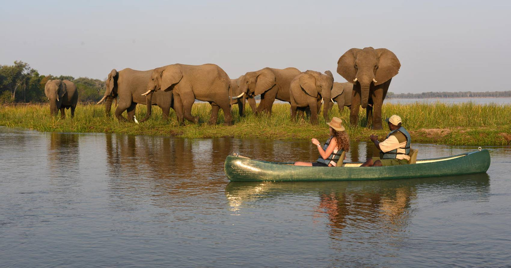

Why Visit Zambia?
Zambia is home to the magnificent Victoria Falls, one of the Seven Natural Wonders of the World. Whether you seek adventure in the wild, a deep cultural experience, or simply relaxation in pristine nature, Zambia offers unforgettable experiences for every traveler.

Victoria Falls
“The Smoke That Thunders” – one of the Seven Natural Wonders of the World.

South Luangwa National Park
Experience thrilling safaris and see elephants, lions, and leopards up close.

Lake Kariba
Enjoy sunset cruises and scenic views across Africa’s largest man-made lake.
Lower Zambezi National Park
Go canoeing and explore the wildlife along the mighty Zambezi River.

Sioma Ngwezi National Park
Explore the stunning landscapes and diverse wildlife along the borders of Angola and Namibia.